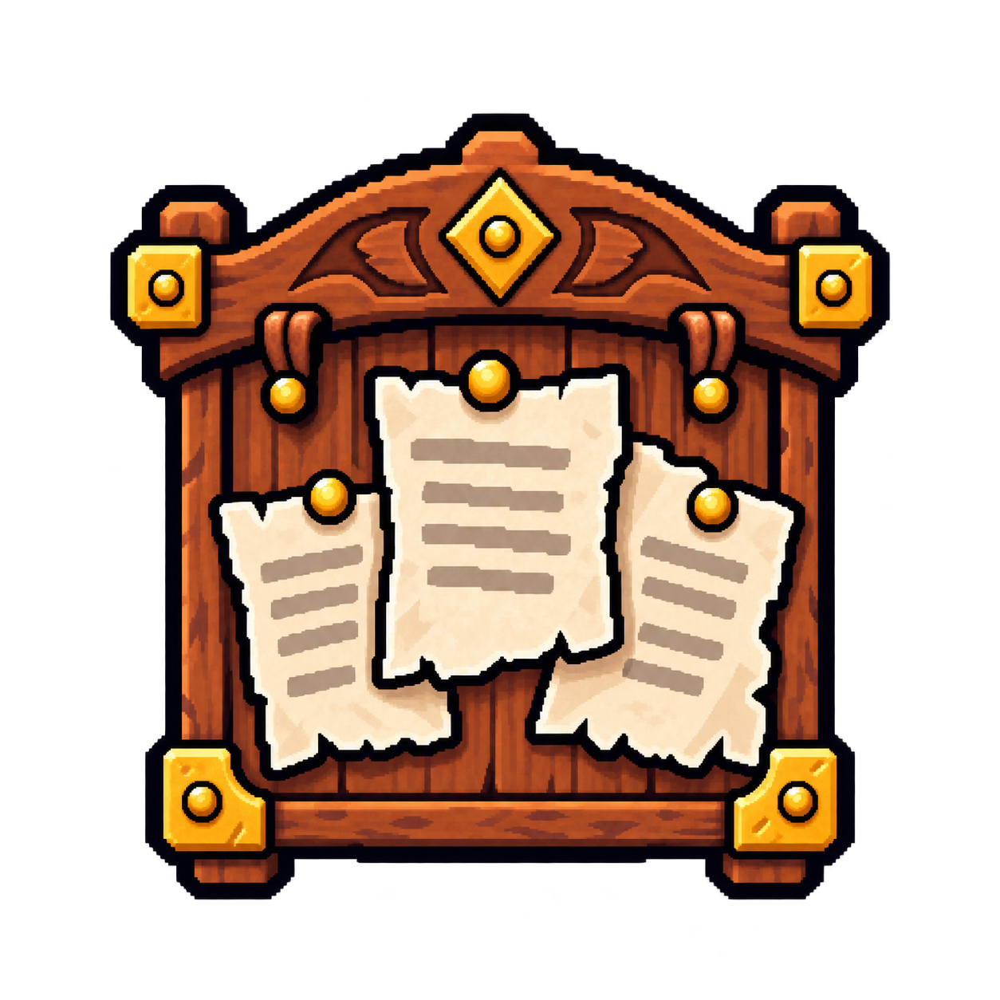
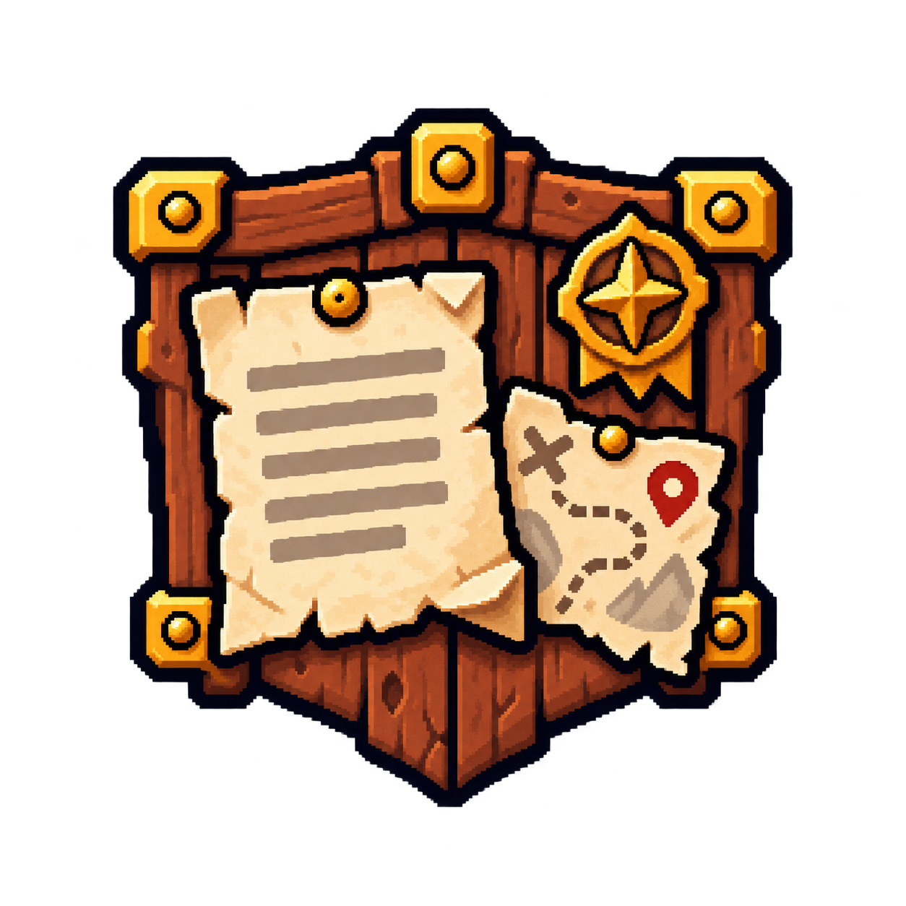

A · 冒險委託板 · 已選定
最接近現有任務語意。厚木框、黃銅護角與紅色蠟封提供清楚焦點。
48 px 導航預覽
PAGE VISUAL OPTIMIZATION · PHASE 1 · TASKS ICON
三款皆沿用已核准的 Mimiku 高密度像素手繪語言；差異集中在輪廓、材質層次與資訊焦點。
A selected — the main review calibration now uses this Tasks icon. Runtime assets and the complete Icons family decision remain unchanged.
最接近現有任務語意。厚木框、黃銅護角與紅色蠟封提供清楚焦點。
48 px 導航預覽

拱形頂框和吊環增加公會陳列感，輪廓比現版更華麗且有辨識度。

盾形底框、路線圖與遠征徽章帶來最強冒險感，資訊量也最高。